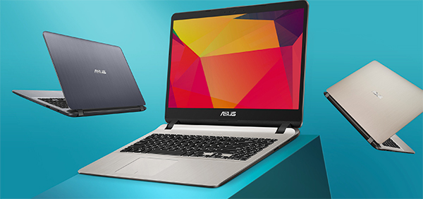

Lenovo
Lenovo se fundó el 1 de noviembre de 1984 en Pekín, China. Tras su expansión significativa en el 2005, Lenovo ha logrado un gran éxito con estrategias de alto valor y ahora controla más del 40% del mercado de computadoras con Windows en los Estados Unidos. Respecto al diseño físico de los ordenadores, se trata por lo general de un diseño convencional y ligero, aunque cada modelo posee unas características diferentes. Podemos decir que estamos ante dispositivos fáciles de manejar, ya que poseen un sistema operativo accesible y sencillo para todos los usuarios. Como sistema operativo lleva integrado Windows, compatible con la gran mayoría de los dispositivos que se pueden encontrar en el mercado actualmente. portatiles más vendidos son Lenovo IdeaPAD, Lenovo S540, Lenovo YOGA 920, Lenovo YOGA 720. Lenovo es una marca de dispositivos electrónicos que busca continuamente la innovación en todos sus campos de trabajo. Adicionalmente, se trata de una empresa comprometida con el medio ambiente y la responsabilidad social, pues se esfuerzan por reducir su impacto y la huella de carbono que éste pueda provocar. A su vez, desde las operaciones diarias hasta el diseño del producto y las soluciones de reciclaje, se comprometen a mostrar un liderazgo ambiental en todas las actividades que realicen. Se trata de una empresa de gama media, con precios muy competitivos en el mercado. Poseen un amplio rango de precios, según el modelo y las características del dispositivo. Lenovo ofrece una amplia selección de portátiles convertibles al mercado, desde portátiles para uso diario hasta profesionales del diseño. Un claro ejemplo sería la serie ThinkPad, que incluye la popular línea Yoga, la cual ejecuta el sistema operativo intuitivo para pantallas táctiles más reciente de Windows. Lenovo ofrece sus productos para todo tipo de consumidores, tanto usuarios con un alto poder adquisitivo que busquen la mejor opción de calidad, como trabajadores, autónomos y estudiantes. La consideramos como una marca capaz de adaptarse a todo tipo de clientes con amplio rango de precios, desde portátiles baratos hasta los más avanzados tecnológicamente. VENTAJAS Innovadora, Protege el medio ambiente, Para todos los públicos, Potente y gran calidad de imagen, Excelente calidad-precio. INCONVENIENTES Diseño mejorable.
Asus
 Empresa multinacional establecida en Taiwán desde 1989. Su principal actividad de negocio es el diseño y fabricación hardware de informática y electrónica de consumo. Asus es la marca líder en placas base y gaming a nivel internacional, así como uno de los 3 principales fabricantes de portátiles del mundo. Se dio a conocer rápidamente con su lanzamiento revolucionario en 2007. Asimismo, Asus dispone de portátiles convertibles, compatible con casi cualquier dispositivo electrónico. Emplea un sistema operativo Windows, el cual facilita su usabilidad de cara a los usuarios. portatiles más vendidos son Asus ZenBook, Asus ZenBook. Del mismo modo, podemos decir que Asus es una marca de alta gama, con productos de gran calidad y muy bien trabajados al detalle, con un rango de precios más reducido que Lenovo. Siempre tratando de innovar, buscan despuntar en el mercado, concienciados con el medio ambiente, tratan de emplear en la cadena de montaje productos reciclados. Totalmente recomendada para gamers, ya que, este es uno de los mayores fuertes de Asus, sus potentes sistemas de tarjetas gráficas, memorias amplias y potentes procesadores, hacen que sea toda una oportunidad para cualquier persona que use el ordenador para videojuegos. VENTAJAS Ideal para videojuegos, Calidad e innovación Excelente calidad precio. INCONVENIENTES Innovación media